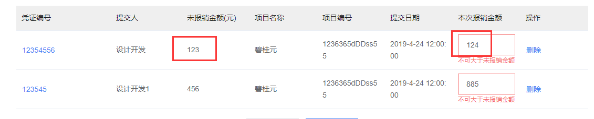
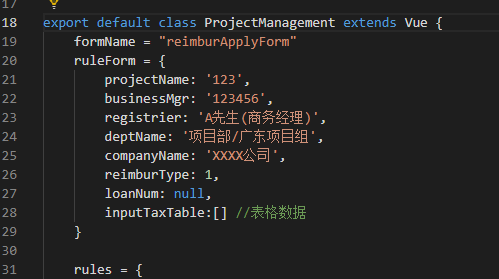
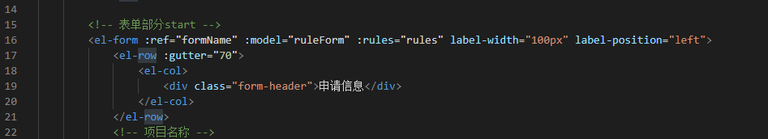
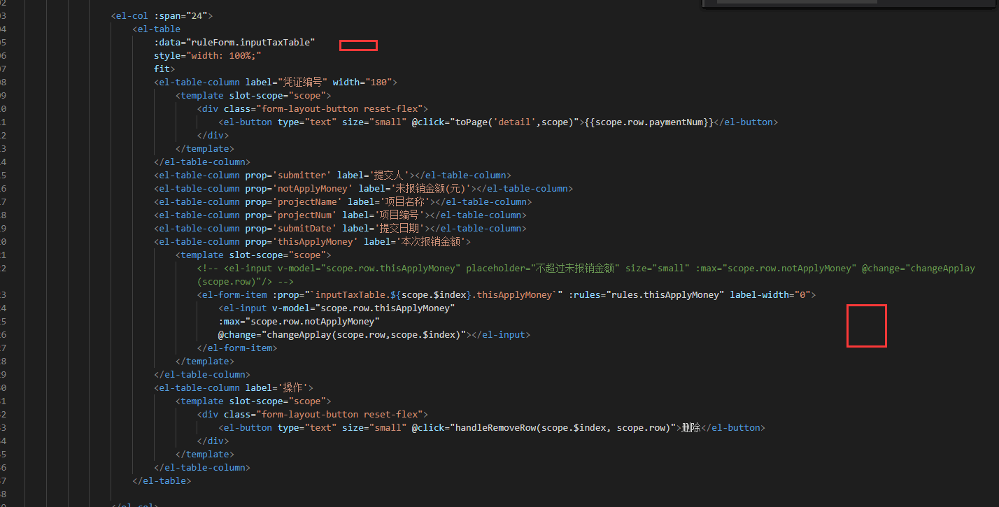
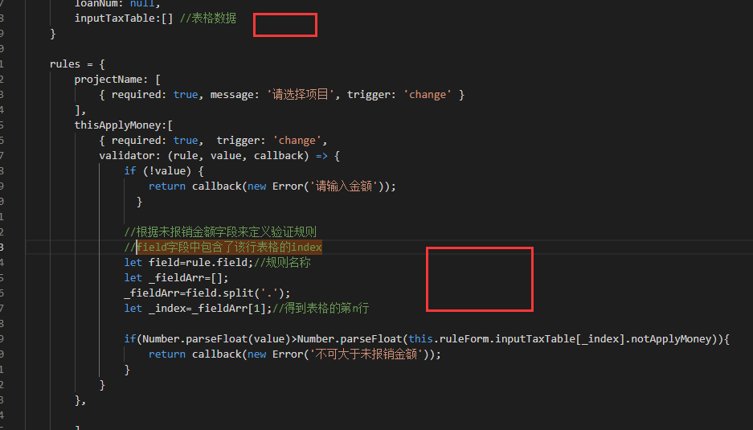

表格中的input需要做某些校验，比如，“本次报销金额”要小于“未报销金额”，这就有点麻烦了，我们都知道，element的form的验证规则rules都是在初始化的时候就定好了的，比如时间验证：
1 | date2: [ |
而我们项目中的是这样的:
 又不想自定义指令来做，还是看下element能不能做吧，于是就开始看文档，发现只能用自定义rules，但是自定义指令，写死的规则也不符合要求啊，因为表格的数据都是不固定的，
首先我们把表格的数据源字段移到我们的form中



然后自定义规则：

这里需要用到一些技巧，比如在模板中，
1 | :prop="`inputTaxTable.${scope.$index}.thisApplyMoney`" |
在需要校验的列中，inputTaxTable.${scope.$index}.thisApplyMoney 查找当前行的数据源，
以及查找“未报销金额”这行的数据来跟当前金额进行对比的时候，保证找到的当前行的数据。
1 | //field字段中包含了该行表格的index |